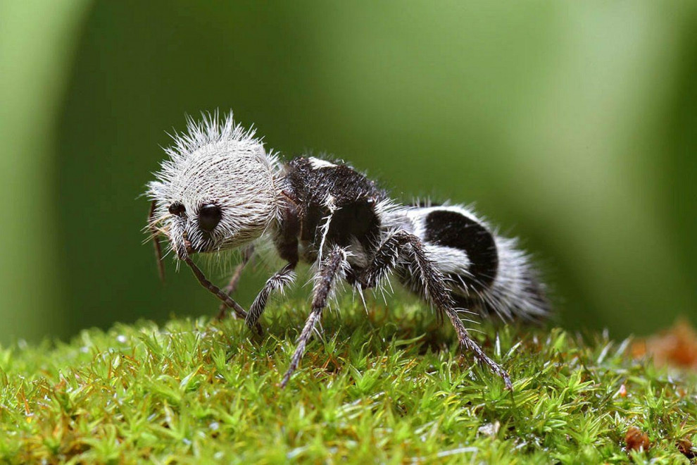

La zoología es la rama de la biología que se encarga del estudio de los animales, su comportamiento,
estructura, fisiología, clasificación y distribución. A través de la zoología, podemos comprender mejor el mundo natural y cómo preservar la biodiversidad.
Clasificación y Taxonomía Identificación y clasificación de las diferentes especies animales organizándolas en un sistema jerárquico basado en sus relaciones evolutivas y características comunes.
Anatomía y Fisiología Estudio de la estructura física y los sistemas biológicos de los animales, así como el funcionamiento de sus órganos y sistemas.
Ecología y Comportamiento Animal: Análisis de cómo los animales interactúan entre sí y con su entorno, sus patrones de comportamiento, y sus roles dentro de los ecosistemas.
Evolución y Genética Investigación de los procesos evolutivos que han dado lugar a la diversidad animal actual y el estudio de la herencia genética y la variabilidad dentro de las poblaciones animales.